Supervised regression on 70,000 OpenAlex CS papers (2014–2024), predicting age-normalized annual citation rate. The key insight — paper age was masking everything — came from running the model on four different fields and noticing identical scores. Reformulating the target unlocked a 3.5× performance jump.
The initial pipeline plateaued at R² ≈ 0.12. Further hyperparameter tuning wasn't moving it. I noticed that reference_count strongly correlated with the target — but so did paper age, which was the dominant confound. To pressure-test the hypothesis, I trained the CS model and evaluated it on papers from mechanical engineering, medicine, and political science. The R² scores came out nearly identical across all four fields.
That confirmed the model wasn't learning anything CS-specific — it was learning a general age-driven accumulation pattern. The fix was to change the target from raw cumulative citations to log(1 + cit_per_year), an age-normalized annual rate, and rebuild the sample with quality-based filtering that removed citation-biased ordering.
log(1 + cited_by_count)log(1 + cit_per_year)Papers sourced from the OpenAlex API — stratified 6,363 per year across 2014–2024 to ensure balanced temporal coverage. Quality filters replaced citation-biased default ordering: is_paratext:false, has_doi:true, journal source type, reference_count ≥ 5, at least one institution, abstract ≥ 30 words. This preserved the full citation spectrum including zero-citation papers.
author_count, institution_count, reference_count, topic_count, abstract_length, years_since_pub, institution_frequency (train-only, prevents leakage).primary_subfield, primary_field, is_oa, oa_status, source_type. OrdinalEncoder fit on train only; unseen test categories assigned -1.all-MiniLM-L6-v2 (384 dim). PCA reduces to 50 components, fit on training embeddings only before transforming test. Captures semantic content without vocabulary size explosion.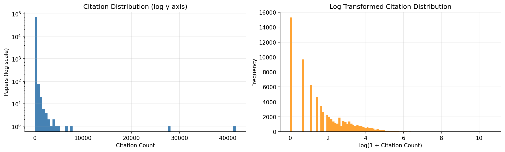
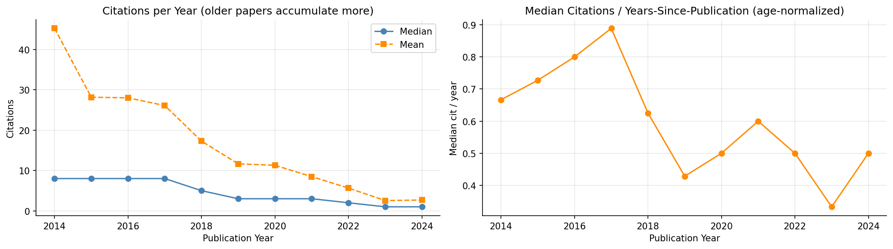
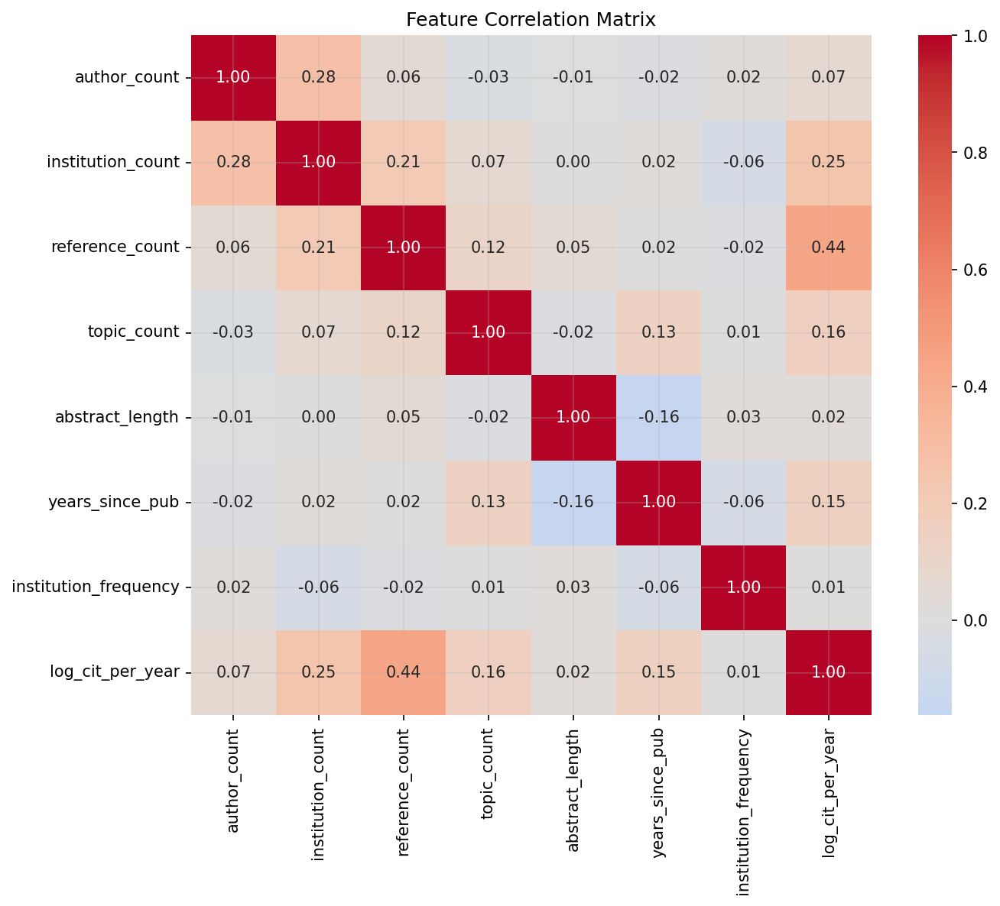
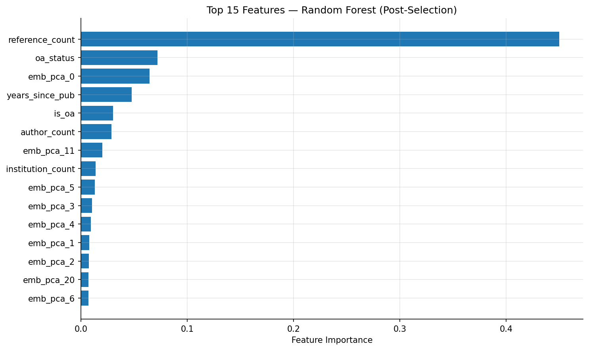
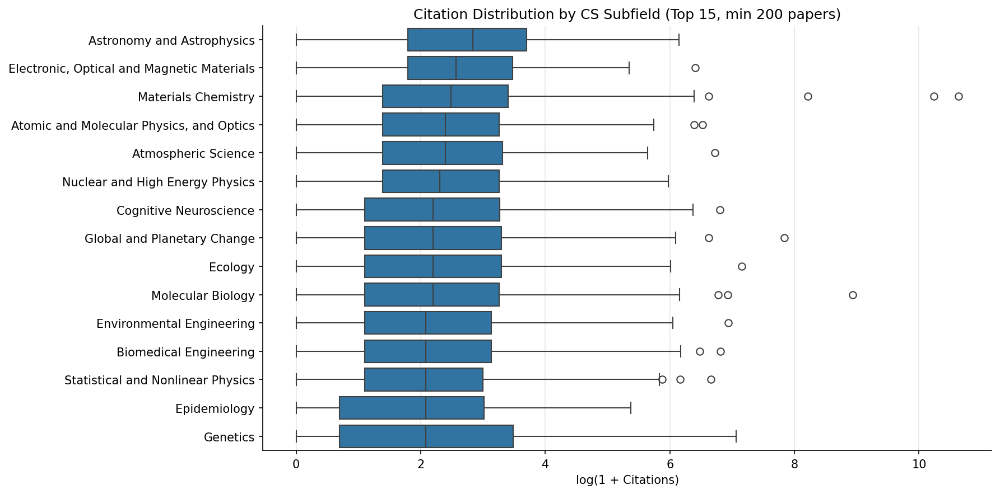
8 traditional ML models (baseline through LightGBM), 2 neural architectures, and 2 ensemble variants. Tree-based boosting clearly outperforms linear models and standalone neural networks on this tabular task. The neural networks don't beat LightGBM alone but contribute complementary signal in the final ensemble.
| Rank | Model | RMSE | MAE | R² |
|---|---|---|---|---|
| #1 | LGB + MLP + TwoBranch (weighted) | 0.5505 | 0.4038 | 0.4196 |
| #2 | LGB + MLP + TwoBranch (equal) | 0.5512 | 0.4036 | 0.4182 |
| #3 | LGB + NN Ensemble | 0.5520 | 0.4053 | 0.4164 |
| #4 | LightGBM | 0.5559 | 0.4083 | 0.4083 |
| #5 | Gradient Boosting | 0.5581 | 0.4099 | 0.4034 |
| #6 | XGBoost | 0.5596 | 0.4128 | 0.4003 |
| #7 | Two-Branch NN | 0.5613 | 0.4077 | 0.3968 |
| #8 | Simple MLP | 0.5648 | 0.4124 | 0.3890 |
| #9 | Random Forest | 0.5658 | 0.4179 | 0.3869 |
| #10 | Ridge Regression | 0.5961 | 0.4466 | 0.3194 |
| #11 | Lasso Regression | 0.5961 | 0.4466 | 0.3194 |
| #12 | Baseline (Mean) | 0.7228 | 0.5659 | −0.0006 |
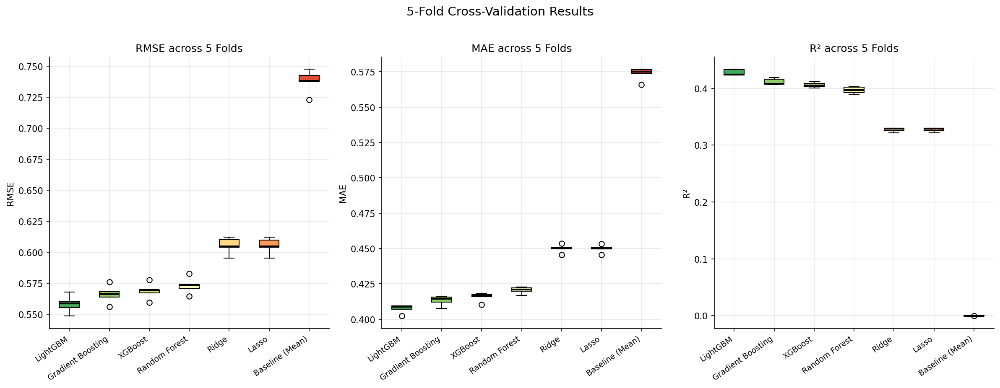
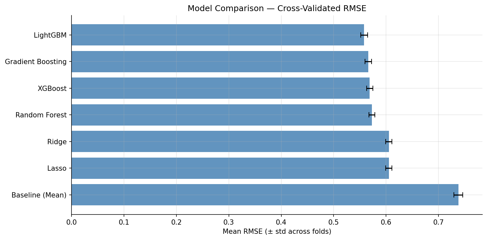
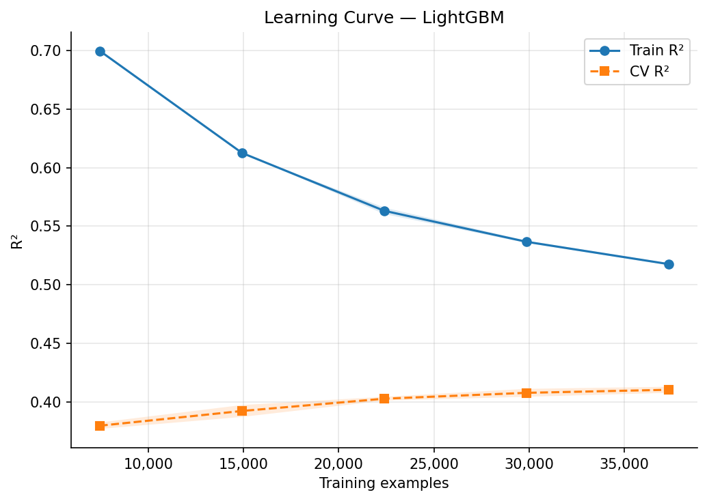
Two neural models were designed to capture different aspects of the 62-feature space. The simple MLP treats all features uniformly. The two-branch network separates structured metadata (12 features) from semantic embeddings (50 PCA components), processing them through independent encoders before a shared regression head — the asymmetric branch widths reflect that embeddings carry more raw information but also more noise.
Instead of equal weighting, ensemble weights were learned on a 15% validation split held out from the training data — never from the test set. LightGBM dominates but the neural models each contribute meaningful complementary signal.
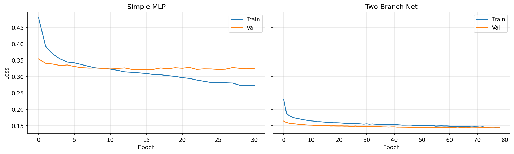
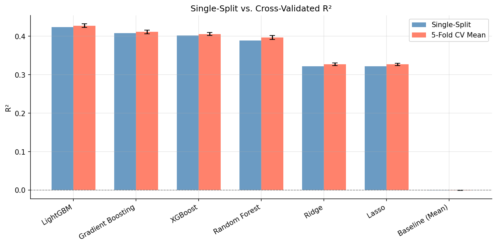
10,000-permutation tests on Ridge regression coefficients, using log(1 + cit_per_year) as the dependent variable. Each test permutes a single feature while holding all others fixed, building a null distribution of what the coefficient would be under no relationship.
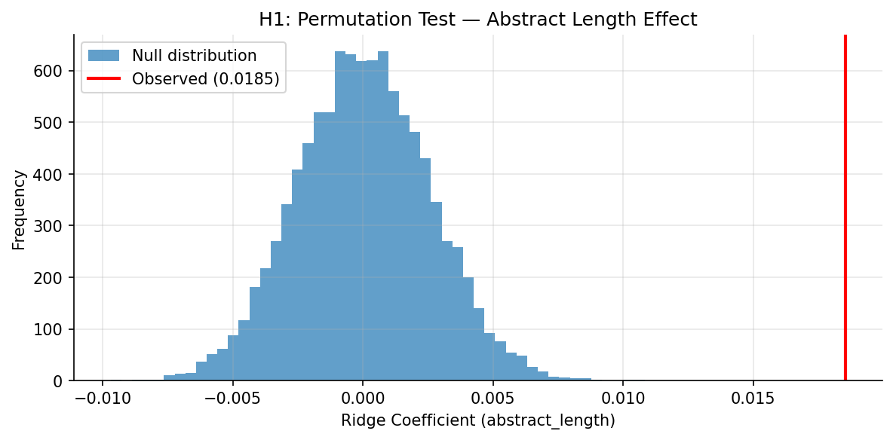
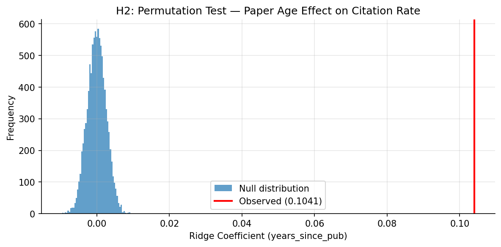
years_since_pub persists even after we divided out paper age from the target. This suggests citation accumulation isn't purely linear with time — established papers attract disproportionate ongoing attention, a pattern consistent with preferential attachment in citation networks.